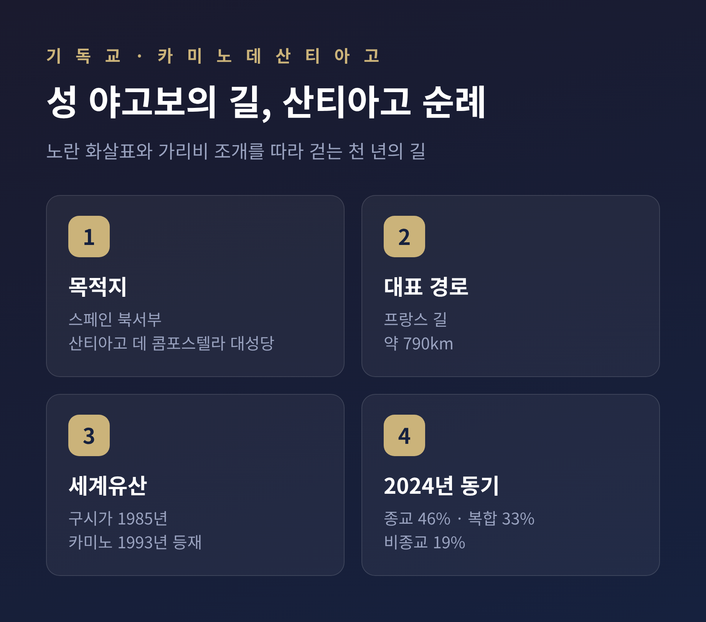
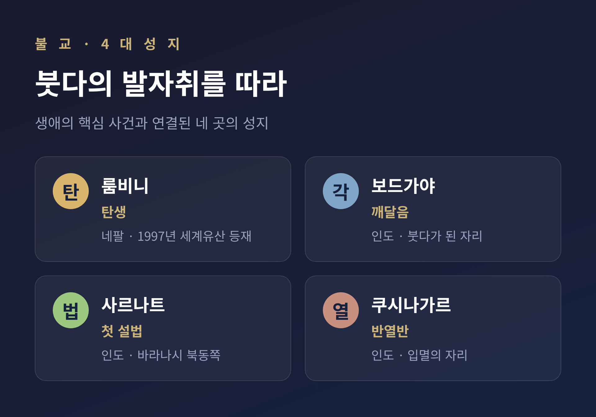

세계 종교 순례 전통 — 메카 산티아고 바라나시로 떠나는 길
오늘은 세계 종교의 순례 전통을 함께 살펴보려 합니다.
이슬람의 메카, 기독교의 산티아고, 힌두교의 바라나시. 길은 서로 다르지만, 묻는 질문은 닮아 있습니다. 이 글은 특정 종교의 우열을 가리지 않습니다. 각 전통을 공정하게 정리하고, 그 안에 흐르는 공통의 의미를 짚어보는 데 목적이 있습니다.
먼저 결론부터 말씀드립니다. 순례는 성지를 향한 신앙 행위인 동시에, 일상에서 잠시 떨어져 나와 자신을 다시 세우는 통과의례입니다. 그리고 낯선 이들과 평등하게 만나는 공동체 경험이기도 합니다.
순례란 무엇인가
순례는 종교적·영적 이유로 떠나는 여정입니다. 특정 신앙 안에서 특별한 의미를 지닌 성스러운 장소를 향합니다.
흥미로운 점은 보편성입니다. 순례라는 제도는 사실상 모든 세계 종교에서 나타납니다. 고대 그리스·로마 종교에서도 중요했습니다. 어느 한 종교만의 현상이 아니라, 인류 종교문화 전반에 걸친 공통된 모습인 셈입니다.
그 기능은 크게 둘로 나뉩니다.
하나는 개인의 변화입니다. 여정 자체가 변화의 경험으로 여겨지며, 헌신과 치유와 깨달음을 추구합니다.
다른 하나는 공동체와 정체성입니다. 함께 성지로 향하며 유대를 다지고, 자신이 속한 공동체를 다시 확인합니다.
그래서 순례에서는 "도착지"만큼이나 "길 위의 과정"이 중시되곤 합니다.
이슬람 — 하지와 메카
하지(Hajj)는 사우디아라비아 메카로 향하는 연례 순례입니다. 이슬람 5대 기둥의 다섯 번째에 해당합니다.
나머지 기둥은 신앙고백, 하루 다섯 번의 기도, 의무 자선, 라마단 단식입니다. 하지는 그 마지막 자리를 차지합니다.
신체적·경제적으로 가능한 모든 무슬림은 평생 최소 한 번 메카를 순례하도록 요구됩니다.
약 5일간 이어지는 의례는 상징으로 가득합니다.
- 순례복(이흐람)을 입어 신 앞에서의 평등과 일치를 드러냅니다.
- 카바(Kaaba) 주위를 도는 타와프를 행합니다.
- 사파와 마르와 두 언덕 사이를 오갑니다(사이).
- 유혹과 악을 상징하는 기둥을 향해 돌을 던집니다(라미).
규모는 압도적입니다. 2024년 하지에는 약 180만 명이 참가했습니다.
다만 빛만 있는 것은 아닙니다. 사우디 당국은 2024년 하지 기간 1,300명 이상이 사망했다고 발표했습니다. 상당수가 폭염 관련이었고, 사망자의 5분의 4 이상이 미허가 순례와 연관된 것으로 보고됐습니다. 신앙의 의미와 더불어, 대규모 군중과 기후라는 현실적 과제도 함께 놓여 있습니다.
기독교 — 산티아고 순례길
카미노 데 산티아고는 "성 야고보의 길"을 뜻합니다. 스페인 북서부 산티아고 데 콤포스텔라 대성당으로 향하는 순례이며, 천 년 이상의 역사를 지닙니다.

시작은 9세기 초였습니다. 사도 성 야고보의 유해가 발견된 것을 계기로 형성되었다고 전해집니다. 전승에 따르면 양치기 펠라요가 갈리시아 들판에서 무덤을 발견했고, 알폰소 2세 왕이 그 자리에 작은 예배당을 세웠습니다. 이것이 훗날 대성당이 되었습니다.
길은 10세기 이후 중세 기독교의 주요 순례로 자라났습니다. 14~16세기에는 종교개혁의 흐름 속에서 이러한 신심 관행이 한동안 쇠퇴하기도 했습니다. 1884년 교황 레오 13세가 콤포스텔라의 유해를 성 야고보의 것이라 선언했고, 20세기 말 카미노는 다시 살아났습니다.
산티아고 데 콤포스텔라 구시가는 1985년, 카미노 자체는 1993년 유네스코 세계유산으로 등재되었습니다.
경로는 여러 갈래입니다. 가장 인기 있는 프랑스 길은 프랑스 남부에서 출발해 약 790km에 이릅니다. 포르투갈 길도 사랑받습니다.
예전에는 순수한 신앙이 거의 전부였습니다. 지금은 동기가 한결 다양합니다. 2024년에는 50만 장 이상의 순례 증명서가 발급되어 역대 최다를 기록했습니다. 그해 동기 분포를 보면 약 46%가 종교적 이유, 약 33%가 종교와 다른 이유가 섞인 복합 동기, 약 19%가 비종교적 동기였습니다.
비종교 순례자들은 건강, 애도, 인생의 전환기, 문화 탐방, 모험 같은 이유를 꼽습니다. "세속적 영성"이라 불리는 흐름입니다.
힌두교 — 바라나시와 쿰브 멜라
바라나시는 인도의 "영적 수도"로 불립니다. 세계에서 가장 오래 사람이 살아온 도시 중 하나이며, 성스러운 갠지스강 강변에 자리합니다.
신자들에게 갠지스강에서의 목욕은 영적 자각을 높이는 길로 여겨집니다.
그리고 쿰브 멜라(Kumbh Mela)가 있습니다. 2025년 프라야그 마하 쿰브 멜라는 2025년 1월 13일부터 2월 26일까지 프라야그라지의 트리베니 상감에서 열렸습니다. 갠지스강과 야무나강이 합류하는 곳입니다.
약 12년마다 수천만 명이 강변 평원에 모입니다. 종교적 목적의 단일 인류 집회로는 지구상 최대 규모로 일컬어집니다.
이곳에서의 목욕은 죄를 씻고 영적 정화를 이룬다고 믿어집니다. 힌두교도들은 이를 모크샤, 곧 윤회에서 벗어나는 길로 여깁니다.
불교 — 붓다의 발자취를 따라
불교에는 붓다의 생애 핵심 사건과 연결된 4대 성지가 있습니다.

- 룸비니(네팔) — 붓다가 탄생한 곳. 1997년 유네스코 세계유산으로 등재되었습니다.
- 보드가야(인도) — 싯다르타 고타마가 깨달음을 얻어 붓다가 된 곳.
- 사르나트(인도) — 붓다가 다섯 비구에게 첫 설법을 편 곳. 바라나시 북동쪽에 있습니다.
- 쿠시나가르(인도) — 붓다가 반열반에 든 곳.
보존의 공로는 한 인물에게로 거슬러 올라갑니다. 붓다 입멸 약 200년 후, 마우리아 왕조의 아소카 왕이 성지 보존에 큰 노력을 기울였습니다. 그는 성지마다 식별용 석주를 세웠고, 이는 후대 순례자들에게 길잡이가 되었습니다. 뒷날에는 여기에 더해 "8대 성지" 전통도 발전했습니다.
다른 길, 닮은 의미
길은 제각각이지만 그 안의 구조는 놀랍도록 닮아 있습니다.
인류학자 빅터 터너는 순례를 통과의례의 일종으로 보았습니다. 그는 두 개념으로 이를 설명했습니다.
하나는 리미널리티(경계성)입니다. 일상의 규칙과 지위에서 분리되어 "사이"에 놓인 상태입니다.
다른 하나는 코뮤니타스입니다. 지위 차이가 사라지고 사람 대 사람으로 만나는 평등한 연대입니다. 일상에서는 좀처럼 얻기 어려운 경험이라고 그는 보았습니다.
오늘날 순례는 종교의 경계를 넘어 변용되고 있습니다. 걷기, 여행, 자기 성찰의 형태로 폭넓게 퍼졌습니다. 앞서 본 카미노가 그 대표적인 예입니다.
정리하면 이렇습니다.
순례는 세 겹의 의미를 지닙니다. 성지를 향한 신앙 행위이고, 일상에서 떨어져 자신을 다시 세우는 통과의례이며, 낯선 이와 평등하게 만나는 공동체 경험입니다.
"길 위에서 사람은 자신과 만난다."
어느 종교의 길을 걷든, 떠난 자리에서 묻게 되는 질문은 결국 닮아 있는지도 모릅니다.